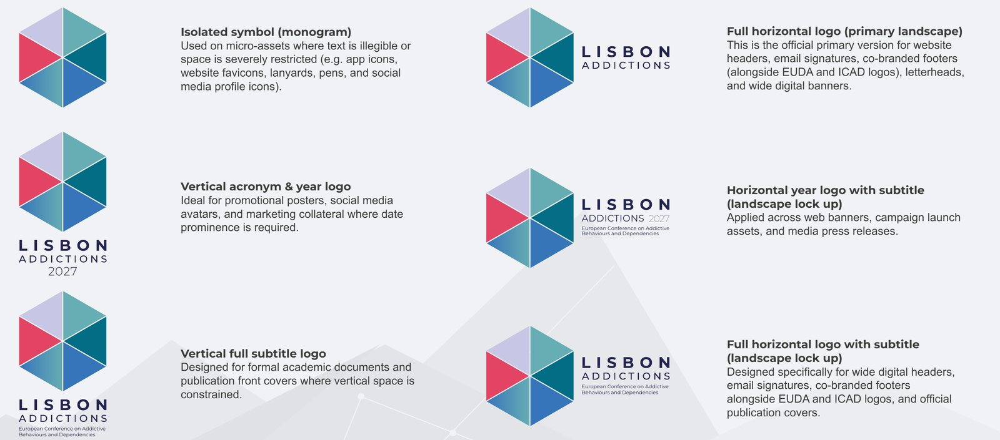
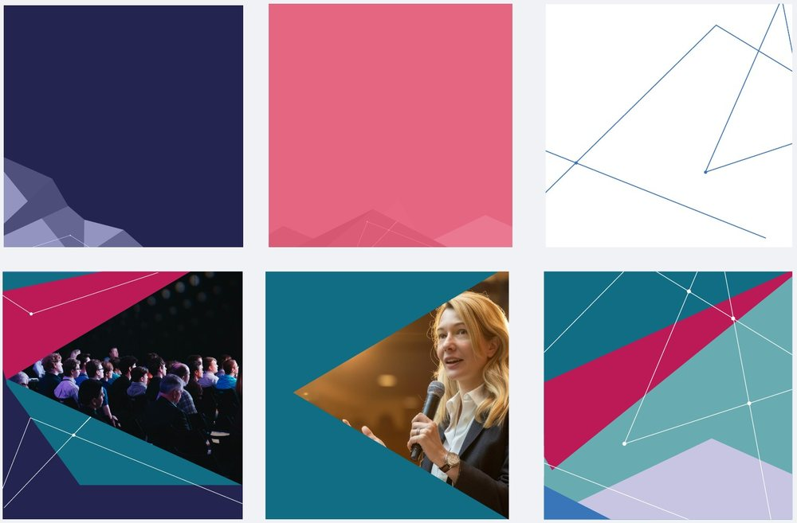
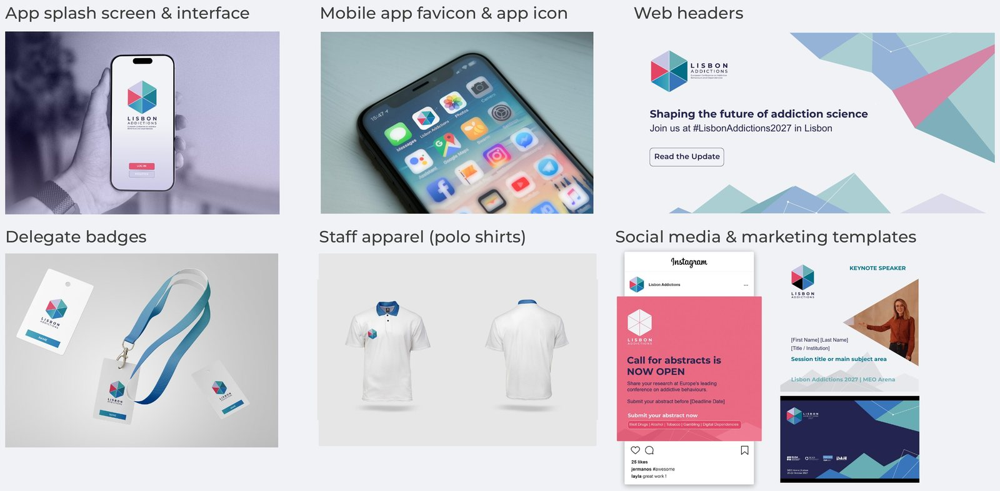

Lisbon Addictions 2027
How I developed the visual identity of the 6th European Conference on Addictive Behaviours and Dependencies, and how it was applied across digital, print and on-site communication.
- Event
- Lisbon Addictions 2027, MEO Arena, 20–22 October 2027
- Co-organisers
- EUDA, ICAD, SSA (journal Addiction) and ISAJE
- Client
- European Union Drugs Agency (EUDA)
- Developed at
- Magellan Circle (lead contractor)
- My role
- Visual identity design and its application
- Scope
- Logo system, colour, typography, graphic language, brand book, social media and web templates
- Status
- Identity approved by EUDA on 21 August 2026; Brand Book version 03 issued on 29 September 2026
The brief
Lisbon Addictions is organised jointly by four institutions, so the identity had to look professional and recognisable on its own and still sit comfortably next to their logos. It also had to work everywhere the conference shows up: web, social media, print, badges and the stage.
- ConceptsSeveral initial visual concepts were developed and evaluated. Option 1 was the one selected.
- ApprovalThe chosen identity was formally ratified by the European Union Drugs Agency on 21 August 2026.
- SystemLogo versions, colour, type, graphic language and imagery rules were written into a Brand Book.
- ApplicationThe system was applied to the conference website, social media templates and on-site touchpoints.
From icosahedron to hexagon
The previous logo was a multi-faceted 3D polyhedron. It captured the complexity of addiction research, but its varied shading was cluttered and hard to scale. I redrew it as a flat, symmetrical hexagon made of six equal triangular facets around a shared centre, so the symbol keeps its link to the original facets while reading clearly at any size.
Each of the six facets stands for one of the multidisciplinary domains of the addiction ecosystem, and the same triangle later becomes the unit of measure for clear space, the shape of the photo masks and the base of the graphic mesh.

The logo system
The logo comes in vertical and horizontal lock-ups, with or without the year and the subtitle, in full colour, positive, negative and monochrome. Each version has a defined job, from the isolated symbol for favicons, lanyards and profile icons to the full horizontal lock-up for web headers and co-branded footers.

- Clear space equals one triangular facet of the symbol on every side.
- Minimum sizes: 8 mm for the symbol alone, 15 mm wide for the horizontal logo, 22 mm high for the full vertical logo.
- On photos, the white logo goes on dark, quiet areas and the full-colour logo on light, clean ones. Never over faces or busy patterns.
- No stretching, no recolouring facets, no bevels or shadows, no other typefaces, and no transparency.
Colour
Institutional European navy and blue, modern teals, a soft neutral background and the coral red inherited from the first logo. Gradients may fade any colour into white or the neutral grey.
- Deep Institutional Navy#23244FPantone 2765 C
- Institutional Blue#3775BAPantone 660 C
- Deep Teal#046C86Pantone 7706 C
- Vibrant Teal#66ADB4Pantone 7709 C
- Soft Lavender#C7C6E5Pantone 2120 C
- Signature Coral#E44464Pantone 191 C
- Neutral Light Grey#F0F2F5Cool Grey 1 C
- Charcoal Grey#3C3C3BPantone 425 C
Whenever tints or opacity sit behind text, contrast must still meet WCAG 2.1 AA. The logo itself is always used at 100% opacity.
Typography
Montserrat
Titles, headings and callouts only. Bold for H1, Medium or SemiBold for H2 and H3.
All caps is limited to short titles and labels.Arial
Body text, tables and correspondence. At least 14 px on screen, with line height between 1.4 and 1.6.
Chosen for universal availability and accessibility.Graphic language
A mesh of triangular facets, fine white lines and round nodes echoes the logo and suggests scientific connections. Photos are cropped into triangular masks derived from the symbol, and the mesh can run in full colour for covers and stages or in a single colour for quieter banners.

Imagery
Documentary photography of researchers, speakers and delegates in discussion, with natural light and clean areas where the mesh and type can sit. Every image follows strict anti-stigma rules.
- No needles, drug paraphernalia, extreme poverty or visible distress.
- No handcuffs, prison bars or police scenes.
- No words or signs painted or projected on skin.
- No glamorised or dramatised substance use.
Applying the identity
The system was then taken to the places where delegates meet the brand: the conference web header, the mobile app, badges and lanyards, staff apparel and social media templates. The mockups below come from the Brand Book and show how the logo, colours and mesh behave in each format.

Communication pieces
The real social media and web pieces built with the system: announcements, call for abstracts, co-organiser spotlights and reusable templates for the team to fill in. Tap a piece to enlarge it.